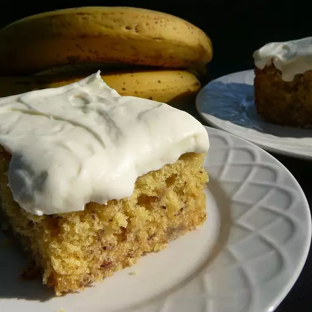

Banana Cake

Description
This banana cake recipe uses fresh mashed bananas and buttermilk for super moist results. It was made for me by a friend while I was visiting her after she had delivered her 11th child. I told her, "I should have baked for you!"
Ingredients
- For the cake: bananas, lemon juice, all-purpose flour, baking soda, salt, white sugar, butter, eggs, vanilla extract, and buttermilk
- For the frosting: butter, cream cheese, vanilla extract, and confectioners' sugar
Steps
- Make the cake:Mix the mashed bananas and lemon juice. Mix the dry ingredients in one bowl and beat the sugar and butter in another. Beat in the eggs and vanilla, then combine the wet and dry ingredients and stir in the banana mixture.
- Bake the cake:Pour the batter into a prepared pan and bake in the preheated oven until a toothpick comes out clean. Remove cake from the oven and place it directly into the freezer for 45 minutes.
- Frost the cake:Cream the butter and cream cheese together for the frosting, then beat in the vanilla and confectioners’ sugar. Allow the cake to cool completely, then frost the cake.